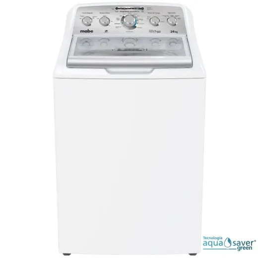

Inicio › Lavadoras y secadoras

Precio en cada tienda
| Tienda | Precio | Antes | Disponibilidad | |
|---|---|---|---|---|
| Lady Lee | L 12,999 | Disponible | Ver en tienda › |
Precios referenciales tomados de cada tienda el 28 de noviembre de 2026. El precio válido es el que muestra la tienda al comprar.
Historial de precio
Lo seguimos desde el 1 de noviembre. Precio más bajo registrado: L 12,999 en Lady Lee (2 de noviembre), igual que hoy. Cambios de precio registrados: 1.
Características
| Capacidad | 22 kg |
|---|
Descripción
Sistema de lavado por agitador. Ahorra agua gracias a la Tecnología Aqua Saber Green. Máxima limpieza y cuidado de las prendas, gracias al nuevo diseño del agitador. Lavado Express que permite tener ropa limpia en tan sólo 20 minutos. Otras características: Tapa metálica con seguro, Panel con 5 perillas, 4 niveles de centrifugado, 5 tamaños de carga, 6 niveles de temperatura, Selección de etapas de lavado, 11 ciclos automáticos, Funciones adicionales, Inicio programado 5 o 10 hrs.
Canasta Sphere Care
De acero inoxidable y máxima capadidad. El diseño de la canasta ayuda a una mayor salida de agua y pronto secado de la ropa. Balance de la tina para evitar que pegue o se cargue hacia un lado por el peso de la ropa.
Nuevo Ciclo de Sanitizado
Mayor protección para tu salud con el nuevo ciclo de sanitizado que elimina 99.9% de bacterias.* *Resultados basados en pruebas de laboratorios bajo el
Otros lavadoras y secadoras Mabe
 Secadora Mabe · 20 kg · A gasL 12,999En Lady Lee
Secadora Mabe · 20 kg · A gasL 12,999En Lady Lee Secadora Mabe · 20 kg · SME26N5MNBBT0L 12,990En 3 tiendas · más barato en Diunsa
Secadora Mabe · 20 kg · SME26N5MNBBT0L 12,990En 3 tiendas · más barato en Diunsa Lavadora Mabe · 22 kg · LMA72215CBAB0L 12,690En 3 tiendas · más barato en Diunsa
Lavadora Mabe · 22 kg · LMA72215CBAB0L 12,690En 3 tiendas · más barato en Diunsa Secadora Mabe · 20 kg · EléctricaL 12,499.01En Lady Lee
Secadora Mabe · 20 kg · EléctricaL 12,499.01En Lady Lee Lavadora Mabe · 24 kg · LMA74215WBAB1L 13,990En 4 tiendas · más barato en Diunsa
Lavadora Mabe · 24 kg · LMA74215WBAB1L 13,990En 4 tiendas · más barato en Diunsa Secadora Mabe · 22 kg · Eléctrica · SME47N8MSBBTL 13,997En La Curacao
Secadora Mabe · 22 kg · Eléctrica · SME47N8MSBBTL 13,997En La Curacao
Lavadora Mabe · 24 kg · Carga superior · LMA74215WBAB0L 13,997En La Curacao Lavadora Mabe · 19 kg · Carga superior · LMA79113VBAB0L 11,997En 3 tiendas · más barato en La Curacao
Lavadora Mabe · 19 kg · Carga superior · LMA79113VBAB0L 11,997En 3 tiendas · más barato en La Curacao